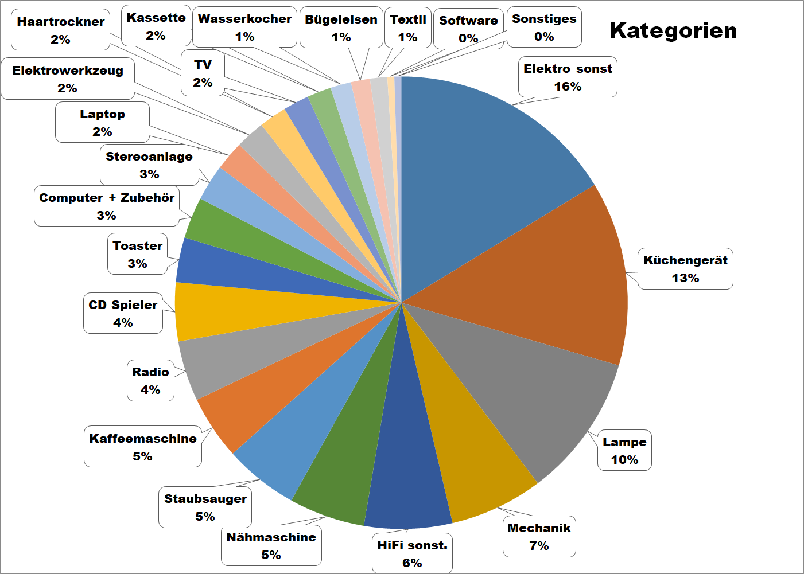

Repair Cafés in Köln

Viel zu oft werden Dinge viel zu schnell entsorgt.
Ob der Toaster streikt, das Radio rauscht, der Staubsauger nicht mehr will oder die Stehlampe dunkel bleibt -
oft muss nur eine Kleinigkeit gerichtet werden.
In Repair Cafés unterstützen ehrenamtliche Reparateur*innen die Besucher*innen dabei, ihre defekten Haushaltsgeräte zu reparieren.
- und das in Köln an vielen Orten und zu vielen Zeiten.
Die Unterstützung reicht von "Wir stellen (Spezial)Werkzeug zur Verfügung und geben Tipps"
bis "Sie beschreiben den Fehler und sehen uns dabei zu, wie wir das Gerät reparieren".
So wird in netter Atmosphäre die Lebensdauer von Alltagsgegenständen verlängert, Müll vermieden und alle lernen dazu.
Die Unterstützung ist kostenlos; Spenden sind willkommen. Lediglich Ersatzteile müssen bezahlt werden.
Die Reparateur*innen arbeiten ehrenamtlich und freuen sich über einen freiwilligen Beitrag,
der beispielsweise für Werkzeug, Fahrtkosten, Verpflegung, Raummiete oder das jährliche Weihnachtsessen verwendet wird.
Anmeldung per E-Mail
Eine E-Mail bedeutet aber nicht unbedingt, dass man in der Reihenfolge Vorrang hat.
Was wird repariert?
Im Prinzip alles, was man tragen kann.
Ein Blick auf die Bilder von durchgeführten Reparaturen
und das Kategorien-Diagramm geben eine genauere Vorstellung davon, was repariert wird.
Bitte bei entsprechenden Geräten auch das Netzteil, die Fernbedienung, eine CD etc. mitbringen, damit der Fehler nachgestellt und die Reparatur getestet werden kann. Eine Lautsprecherbox ist in manchen Repair Cafés vorhanden, aber besser vorher nachfragen.
Bei CD Spielern, deren Lade nicht mehr herauskommt, ist meistens der Antriebsriemen schlapp, der ersetzt werden kann.
CD Spieler, die „No Disc“ anzeigen, sind eher selten erfolgreich zu reparieren, genauso wie Drucker und Kassettengeräte.
Da die Reparatur von Kaffeevollautomaten mehrere Stunden in Anspruch nehmen kann, wird dieser Service in den Repair Cafés in Köln zum Teil nur eingeschränkt angeboten. Am besten vorher nachfragen.
Unter dieser Google Suche
findet man professionelle Reparaturmöglichkeiten für Kaffeemaschinen in Köln.
Bei Druckern, Laptops und Handys besser vorher nachfragen, ob diese dort repariert werden!

Allgemeine Fragen zu Repair Cafés und dieser Internetseite bitte an info äht repaircafe-koeln.de (wegen zunemendem Spam etwas verfremdet).
Reparaturanmeldungen bitte an das jeweilige Repair Café senden.